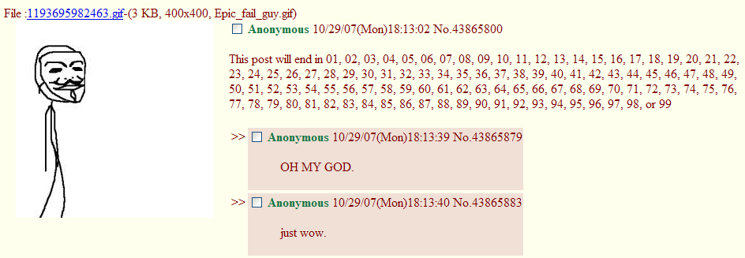

The Internet is Serious Business!
Home > Computers, Technology, and Internet > 4chan > Epic Fail Guy
This is an old /b/ meme that was posted somewhat frequently on that board during the late 2000s, as well as a bit into the early 2010s. It consists of a crudely drawn stick figure character failing at everything he does; that he wore the Guy Fawkes mask was no doubt intended to mock those who considered themselves part of Anonymous (which was a vastly different group back in 2007 and 2008 than it is today, or even by 2010) and also wore the mask, but instead of pursuing lulz, dedicated themselves to political causes, and who in the process wanted to seem powerful and intimidating.
It was definitely one of my favorite old 4chan memes. I remember a few times when, browsing /b/, I would happen upon an entire thread dedicated to the meme; in those instances somebody had taken it upon himself to make an entire set of images—which, if properly done, were always to have a resolution of 400x400 and be in the GIF format—featuring the character in an entertaining and humorous situation, and thereafter starting a thread in which he would post each image in order as part of a little story. The best ones would welcome other folks to post suggestions regarding what Epic Fail Guy should do next, and then actually incorporating those suggestions into the plot as it was being revealed.
Like all old memes, Epic Fail Guy has, unfortunately, been largely forgotten. After all these years, though, I am still unable to forget a fail of this magnitude:

See also the Encyclopedia Dramatica article on this meme.


 All written materials on this Web site are my own, and all are released under the Do What the Fuck You Want to Public License Version 2.
All written materials on this Web site are my own, and all are released under the Do What the Fuck You Want to Public License Version 2.
This page last modified on 26 March 2021.